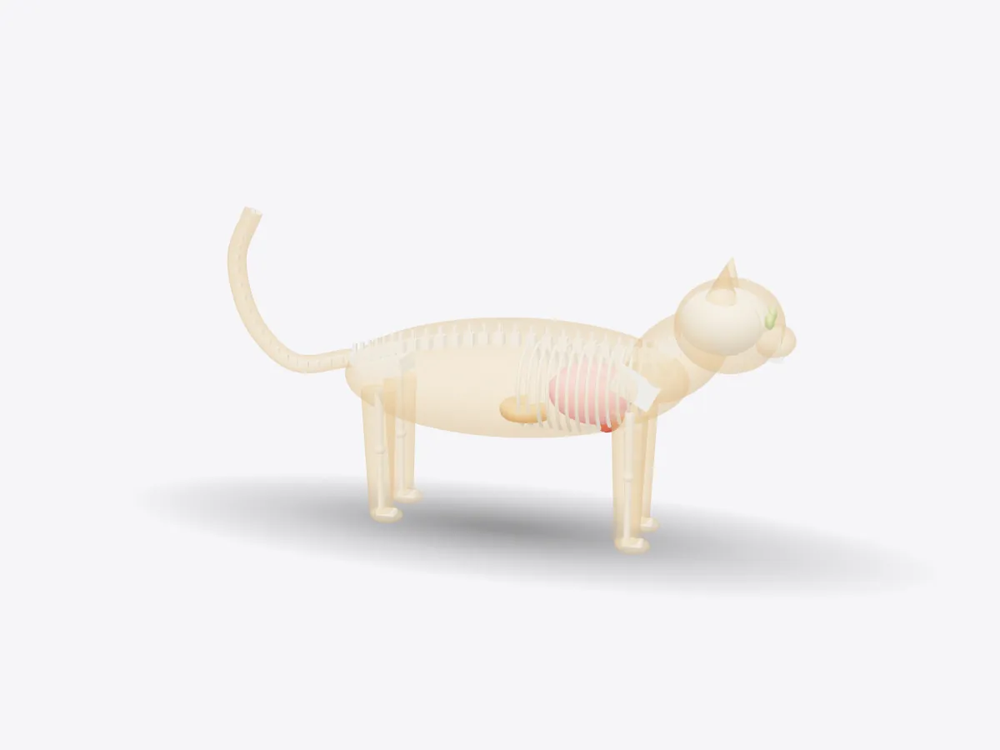

01 / 05
Overview
9 parts, one idea.
Explore a stylised cat in 3D. Toggle skin, skeleton and organs to see the skull, spine, ribcage, heart, lungs, stomach and brain. Pet it and make it walk.
Drag to orbit, pinch or scroll to zoom, tap any part.
How it works · Nature
A hunter built for stalking, springing and squeezing through gaps. Peel back the layers to see the skeleton and organs that make a cat a cat.

Scores are saved on this device only.
01 / 05
Overview
Explore a stylised cat in 3D. Toggle skin, skeleton and organs to see the skull, spine, ribcage, heart, lungs, stomach and brain. Pet it and make it walk.
Drag to orbit, pinch or scroll to zoom, tap any part.
02 / 05
Explode
Keep scrolling and every part slides away from the centre, so you can see how they fit together.
03 / 05
Slice
A section plane sweeps through the model as you scroll. Pick an axis and set the depth yourself.
04 / 05
Parts
Pick a part or tap a glowing dot. It lights up and everything else fades back.
05 / 05
Facts
The usual number of ribs in a domestic cat.
Cat collarbones aren't attached to other bones, freeing the shoulders.
Cats lack a working sweet-taste receptor gene.
Explained
Every part of a cat's body is shaped by its life as a small predator that stalks, pounces and climbs. This stylised model shows three layers you can switch on and off: the skin, the skeleton and four key organs, the brain, heart, lungs and stomach. It isn't a veterinary diagram, but the arrangement and the facts follow standard feline anatomy.
Start with the skeleton. A cat's spine is long and very flexible, which lets it arch its back, twist in mid-air and stretch its stride when sprinting. The tail continues the spine with a chain of small vertebrae and helps with balance on narrow perches. Cats walk on their toes rather than on the whole foot, a posture called digitigrade, which effectively lengthens the legs and keeps footsteps quiet. Unusually, a cat's collarbones float in muscle instead of joining the shoulder to the breastbone, so its front legs can move freely and its shoulders can fit through narrow gaps. The ribcage, usually 13 pairs of ribs, protects the heart and lungs.
The heart has four chambers, just like ours. The right side pumps blood to the lungs to collect oxygen; the left side sends it on around the body. The two lungs fill most of the chest, and air travels down branching tubes to tiny air sacs called alveoli, where gas exchange happens. Behind the diaphragm sits the stomach. Cats are obligate carnivores, which means they must eat animal tissue to get certain nutrients, such as the amino acid taurine. They also can't taste sweetness, because one of the genes needed for the sweet taste receptor doesn't work in cats.
The brain sits in a rounded skull with large eye sockets. Forward-facing eyes give overlapping fields of view, which helps a cat judge distance before it leaps. The cerebellum, at the back of the brain, coordinates the fine balance behind those leaps and landings. Whiskers are deeply rooted, nerve-rich hairs that pick up tiny air movements and help a cat feel its way in the dark. And the purr? It's produced by rapid twitching of the muscles of the larynx, the voice box, as the cat breathes in and out. Tap the cat in play mode to hear it, in spirit at least.
D3DDD
D3DDD makes them: product cutaways, exploded views, architectural renders and technical drawings.